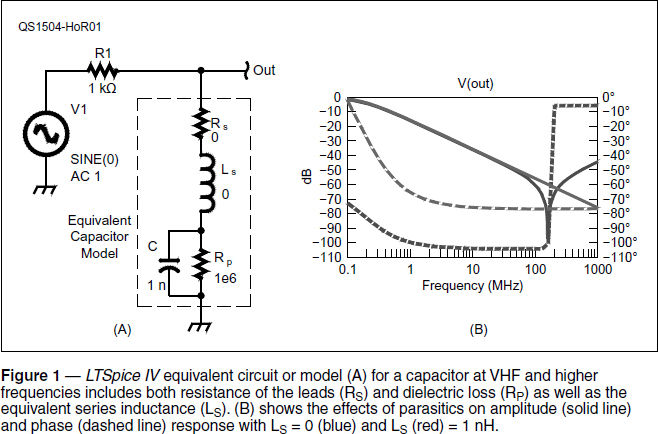
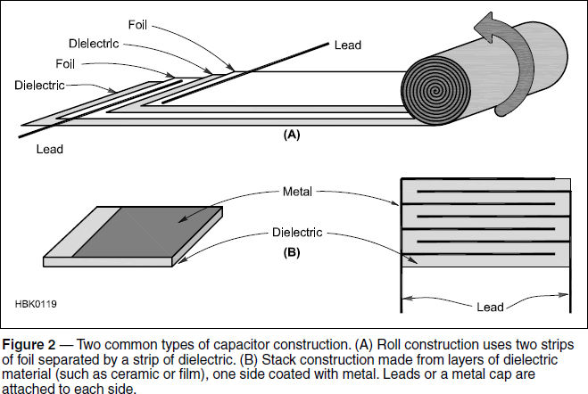
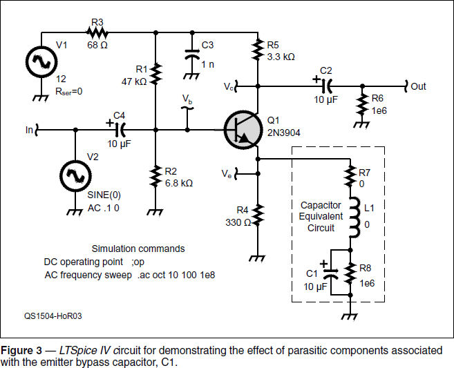

Experiment #147 — Capacitors at RF
Paraphrasing the opening sentence of Experiment #142, “Inductors at RF,” when is a capacitor not a capacitor? When it is an inductor.1 This odd fact of life at RF causes a lot of head-scratching and troubleshooting, particularly as the frequency of interest rises beyond the upper HF range. A capacitor’s parasitic inductances and resistances are either hidden inside the capacitor or hidden in plain sight. Intriguing, isn’t it? It’s all part of learning to think like a radio wave.
The Non-Ideal Capacitor
Figure 1 shows a simple test circuit that includes a general-purpose model of a capacitor at RF and some simulated response curves. A nanofarad is not a nanofarad, it seems! The two resistances and the inductance are parasitic components. They are consequences of the way the capacitor is constructed and are present to varying degrees in all capacitors.

■ LS is equivalent series inductance, or ESL, created by the capacitor’s internal construction and connecting leads.
■ RS is equivalent series resistance, or ESR, and represents the resistance from skin effect of the electrodes and leads along with dielectric losses.
■ RP is equivalent parallel resistance, or EPR, and represents leakage losses.
Because the two primary sources of RS (skin effect and dielectric loss) both change with frequency in different ways, they are often modeled as separate resistors in simulation calculations. In this column, we’ll just combine them for simplicity.
Figure 2 shows how two common types of capacitors are constructed. At A, you can see a common “roll-type” construction used for inexpensive electrolytics and many plastic film-type capacitors used in applications below 100 kHz. From the view of the end of the roll, you can probably guess that LS is pretty high compared to other types of capacitors. In fact, from the Cornell-Dubilier Electronics Aluminum Electrolytic Capacitor Application Guide, we learn that a typical value for LS of an axial lead electrolytic ranges from the low tens of nH to around 200 nH.2

Figure 2B shows how a typical ceramic SMT (surface mount technology) ceramic capacitor is constructed. The capacitor is manufactured by placing an interleaved stack of metal foil and ceramic in a press and heating it to create a single monolithic (literally “one stone”) metal-ceramic block. The ends of the metal layers stick out of each side, where a metal cap is applied to form the terminal. This type of capacitor has very, very low LS — less than 1 nH.3 Disc ceramic capacitors are similar, with leads attached to the metal layers on each end of the stack. Other types of capacitor such as tantalum, silvered-mica, air variable, trimmers, and so on have intermediate values of LS.
Parasitic Effects
Measuring the effects of these parasitic components at RF is not all that easy, so we’ll return to our LTSpice roots to have a look. (See Experiments #83 – 85.4)
Figure 1B shows the difference in frequency response from 100 kHz to 1 GHz between a nearly ideal 1 nF capacitor (RS and LS are zero and RP is 1 MΩ) and one with 1 nH of inductance added. Just like an inductor’s series capacitance creates a self-resonance, so does a capacitor’s series inductance. As frequency increases through self-resonance, the dotted trace shows the capacitor’s reactance changing to inductive, which then continues to increase with frequency.
The ideal component behaves as expected at all frequencies. The non-ideal component, with its series resonance near 2 meters, might not be the best choice for a bypass capacitor at VHF and above!
Circuit Behavior with Parasitics
Figure 3 shows a common-emitter (CE) amplifier, the subject of Hands-On Radio Experiment #1, way back when. The ac gain of a CE amplifier primarily depends on two things — the transistor’s gain-bandwidth product (hFE) and the ratio of the collector and emitter impedances, both of which change dramatically with frequency. In the emitter circuit, however, the bypass capacitor is represented by the RF model.

If the bypass capacitor is assumed to have a very low impedance, the amplifier’s gain is limited by the resistance through the transistors internal emitter resistance, re, which depends on dc current flow through the transistor, but is typically around 25 Ω. That means the voltage gain of the circuit will be approximately AV ≈ –3.3 kΩ / re = –132 = 42 dB. If the bypass capacitor wasn’t there at all, AV would drop to –3.3 kΩ / 330 Ω = –10 = 20 dB. So if the capacitor parasitic components are present, their effects should be clearly visible. Let’s try it!
Start by carefully creating the entire circuit as shown in Figure 3. (The LTSpice IV schematic file and two sample response traces are available on the Hands-On Radio web page for the experiment.) The voltage source V1 is a 12 V power supply. The voltage source V2 is the ac sine wave input to the circuit. Set the parasitic component values of RS (R7) and LS (L1) to zero and of RP (R8) to a very high value. Next, perform a dc operating point (DC OP PNT) simulation. Make sure the value of VC is somewhere near 1⁄2 V1 and the transistor’s collector current, Ic(Q1) ≈ 2.5 mA. If the operating point is not correct, the simulation will not produce accurate results.
Create an AC ANALYSIS simulation command with 10 points per decade of frequency between 100 Hz and 100 MHz (1e8 Hz). Run the simulation and click the simulation probe on the OUT and IN ports. In the response window (available on the website), you can see V(in) at the –20 dB level and V(out) near 30 dB, so voltage gain is approximately 48 dB, which is within reason of our previous estimate. The amplifier’s bandwidth at the –3 dB points extends from about 1.2 kHz to 9 MHz, more or less.
Now start adding in the parasitic component values and observe the effect on the amplifier’s frequency response. For example, changing the value of RS to 10 Ω drops the gain of the circuit to 43 dB without changing the frequency response very much. Changing the value of LS to 1 μH shifts the entire frequency response lower and reduces the circuit bandwidth so that the –3 dB points are now at 700 Hz and 3 MHz.
Next, change the bypass capacitor to the non-ideal 1 nF capacitor of Figure 1 and run the simulation from 100 Hz to 1 GHz. At low frequencies where the small capacitance is ineffective, amplifier gain is 20 dB as predicted.5 Above 100 kHz, gain increases to 40 dB, then falls off as transistor gain decreases and series inductance begins to have an effect.
Experiment by changing the coupling capacitors (C2 and C4) to their RF models, changing the transistor type, and adding small inductances in the signal path to simulate lead length. Keep an eye on the circuit’s phase response (dashed line on the response graphs) to see how the extra inductances “color” the response.
Notes
1All previous Hands-On Radio experiments are available to ARRL members at www.arrl.org/hands-on-radio.
2www.cde.com/resources/catalogs/AEappGUIDE.pdf
3“Parasitic Inductance of Multilayer Ceramic Capacitors,” AVX Corporation, www.avx.com/docs/techinfo/parasitc.pdf.
4LTSpice IV is available from Linear Technologies at www.linear.com/designtools/software.
5Remember that the input signal is 0.1 V creating a –20 dB input reference for gain calculations, so an output level of 0 dB represents 20 dB of gain.